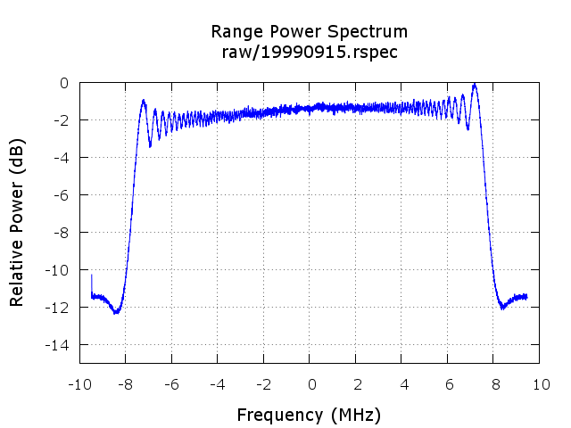

ANSI-C programs: rspec_IQ.c, rspec_real.c
NAME
rspec_IQ - Calculate range
spectrum from uncompressed raw data (IQ data).
rspec_real - Calculate range spectrum from uncompressed
raw data (video offset data).
SYNOPSIS
rspec_IQ <SAR_par> <PROC_par>
<signal_data> <range_spec> [loff] [nlspec] [nrfft]
[roff] [pltflg]
| <SAR_par> | (input) MSP SAR sensor parameter file |
| <PROC_par> | (input) MSP processing parameter File |
| <signal_data> | (input) SAR raw data (IQ format data) |
| <range_spec> | (output) range spectrum data file (text
format) |
| [loff] | offset echoes from start of raw data file (enter - for default: PROC_par) |
| [nlspec] | number of lines to estimate spectrum (enter - for
default: 4096) |
| [nrfft] | range FFT size (enter - for default: 4096) |
| [roff] | range offset in samples (enter - for default:
PROC_par) |
| [pltflg] | range spectrum plotting
flag: 0: none (default) 1: output plot in PNG format |
rspec_real <sSAR_par> <PROC_par>
<signal_data> <range_spec> [loff] [nlspec]
[nrfft]
| <SAR_par> | (input) MSP SAR sensor parameter file |
| <proc_par> | (input) MSP processing parameter File |
| <signal_data> | (input) SAR raw data (offset video data) |
| <range_spec> | (output) range spectrum data file (text
format) |
| [loff] | number of lines offset (default: PROC_par parameter value) |
| [nlspec] | number of lines to estimate spectrum (default:512) |
| [nrfft] | range FFT size (default=2048) |
EXAMPLES
rspec_IQ ERS1_ESA.par p19990521.slc.par .raw 19990521.rspec
- - - - 2
rspec_real SIRC.par p19941009.slc.par 19941009.raw 19941009.rspec
6000 1024 4096
DESCRIPTION
The range power spectrum is calculated from the SAR raw data (IQ
data for rspec_IQ, offset video data for rspec_real) using the
FFT to calculate individual spectra that are averaged to generate
the periodogram. The size of the FFT and number of
range spectra that are averaged in the periodogram can be
specified on the command line. The user can also specify
the starting range sample number and an offset in echos from the
start of the file.
These programs estimate the image SNR by comparing the average
spectrum power over the chirp bandwidth to the average noise
level outside of the chirp. This SNR estimate is stored in the
SNR_range_spectrum parameter in the MSP processing
parameter file. This is used later for compensation of the range
antenna pattern gain correction in the azimuth compression
program az_proc. The data segment used
for the estimation can be specified by the user by setting the
offset in lines relative to the beginning of the file.
Plotting of the range spectrum is controlled by the
pltflg command line
parameter. When the pltflg is 1, the range spectrum plot
is stored in PNG image format. A sample range spectrum plot
is shown below. If radar interference is present,
then it can appear as spikes in the spectrum plot.

A program such as Gnuplot can be used to plot the values
stored in the text file of rspec_real. The plot is of
relative power in dB versus frequency in MHz.
echo "plot '19990915.rspec' u 1:2 with lines lc 3"
|gnuplot
SEE ALSO
Users Guide, typedef_MSP.h, MSP Processing Parameter File, azsp_IQ.